Least-Squares Migration
From Normal Equations to Practical Preconditioning
Schools of EAS, CSE, ECE — Georgia Institute of Technology
2026-03-09


Reverse-time Migration
Felix J. Herrmann
School of Earth and Ocean Sciences — Georgia Institute of Technology
Outline
- The nonlinear forward problem and linearization
- The linearized forward problem and its adjoint
- The normal equations and the Hessian
- Data-space least-squares migration (DDLSM)
- LSQR algorithm and preconditioning
- Curvelet-based preconditioning
- Image-space least-squares migration (IDLSM)
- Approximations of the Hessian
- Summary and practical considerations
The Nonlinear Forward Problem
For each source \(i\), the forward-modeled data are
\[ \mathbf{y}_i = \mathcal{F}[\mathbf{m}]\,\mathbf{q}_i + \boldsymbol{\epsilon} \]
where \(\mathcal{F}[\mathbf{m}] = \mathbf{P}_r\,\mathbf{A}^{-1}[\mathbf{m}]\,\mathbf{P}_s^{\top}\) maps sources to receivers through the wave equation:
\[ \mathbf{A}[\mathbf{m}] = \operatorname{diag}(\mathbf{m})\,\frac{\partial^2}{\partial t^2} - \nabla^2 \]
with squared-slowness model \(\mathbf{m}\) (see Hill and Rüger 2020, Ch. 11).
The full-waveform inversion (FWI) objective is
\[ \min_{\mathbf{m}}\; f(\mathbf{m}) = \sum_{i=1}^{n_s} \|\mathcal{F}[\mathbf{m}]\,\mathbf{q}_i - \mathbf{y}_i\|_2^2 \]
Gradient of FWI
The gradient of the FWI objective evaluated at a smooth background \(\mathbf{m}_0\):
\[ \nabla_{\mathbf{m}} f\big|_{\mathbf{m}_0} = \sum_{i=1}^{n_s} \mathbf{J}_i^{\top}\,\underbrace{\big(\mathcal{F}[\mathbf{m}_0]\,\mathbf{q}_i - \mathbf{y}_i\big)}_{\text{data residual for source } i} \]
Stacking the Jacobians \(\mathbf{F} = [\mathbf{J}_1^{\top}, \ldots, \mathbf{J}_{n_s}^{\top}]^{\top}\) and the residuals \(\mathbf{r}\):
\[ \nabla_{\mathbf{m}} f\big|_{\mathbf{m}_0} = \underbrace{\mathbf{F}^{\top}}_{\text{migration}}\,\mathbf{r} \]
The gradient is computed by migrating the data residual — applying the adjoint Born scattering operator \(\mathbf{F}^{\top}\) in the smooth background \(\mathbf{m}_0\).
Linearization: Born Scattering
Linearizing \(\mathcal{F}[\mathbf{m}]\) around a smooth background \(\mathbf{m}_0\) yields the Jacobian (Born scattering / demigration operator). By the chain rule:
\[ \begin{aligned} \mathbf{J} &= \nabla_{\mathbf{m}}\mathcal{F}[\mathbf{m}_0] \\ &= -\mathbf{P}_r\,\mathbf{A}^{-1}[\mathbf{m}]\,\operatorname{diag}\!\left(\frac{\partial\mathbf{A}[\mathbf{m}]}{\partial\mathbf{m}}\,\mathbf{A}^{-1}[\mathbf{m}]\,\mathbf{P}_s^{\top}\mathbf{q}\right)\Bigg|_{\mathbf{m}_0} \end{aligned} \]
For source \(i\) gives the Born-scattered data:
\[ \delta\mathbf{d}_i = \mathbf{J}_i\,\delta\mathbf{m} \]
Writing \(\mathbf{m}\) for the reflectivity perturbation and stacking over sources, \(\mathbf{F} = [\mathbf{J}_1^{\top}, \ldots, \mathbf{J}_{n_s}^{\top}]^{\top}\):
\[ \mathbf{d} = \mathbf{F}\,\mathbf{m} + \mathbf{n} \]
where \(\mathbf{F}\) is the Born modeling (demigration) operator and \(\mathbf{F}^{\top}\) is migration.
The Linearized Seismic Inverse Problem
Under the Born (single-scattering) approximation, observed data \(\mathbf{d}\) relates to a reflectivity model \(\mathbf{m}\) via
\[ \mathbf{d} = \mathbf{F}\,\mathbf{m} + \mathbf{n} \]
where
- \(\mathbf{F}\) — the Born modeling (demigration) operator
- \(\mathbf{m}\) — subsurface reflectivity (the image we seek)
- \(\mathbf{n}\) — noise and modeling errors
Goal: recover \(\mathbf{m}\) from \(\mathbf{d}\), given a smooth background velocity \(v_0(\mathbf{x})\).
Migration as the Adjoint
Conventional migration applies the adjoint \(\mathbf{F}^{\top}\) to the data:
\[ \mathbf{m}_{\text{mig}} = \mathbf{F}^{\top}\,\mathbf{d} \]
This is not the inverse. Substituting \(\mathbf{d} = \mathbf{F}\,\mathbf{m}\):
\[ \mathbf{m}_{\text{mig}} = \underbrace{\mathbf{F}^{\top}\mathbf{F}}_{\mathbf{H}}\;\mathbf{m} \]
The migrated image is a blurred version of the true reflectivity, filtered by the Hessian \(\mathbf{H} = \mathbf{F}^{\top}\mathbf{F}\).
Migration as the Adjoint — Workflow
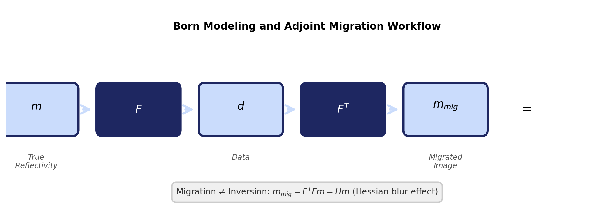
Born modeling and adjoint migration workflow. Migration applies the adjoint, not the inverse.
What Does the Hessian Encode?
The Hessian \(\mathbf{H} = \mathbf{F}^{\top}\mathbf{F}\) captures the combined effect of:
| Factor | Consequence in image |
|---|---|
| Finite acquisition aperture | Dip-dependent illumination |
| Source/receiver sampling | Acquisition footprint |
| Geometric spreading | Depth-dependent amplitude decay |
| Band-limited source | Finite spatial resolution |
| Velocity structure | Position-dependent blurring |
Undoing these effects \(\Rightarrow\) true-amplitude, high-resolution imaging.
Hessian Blurring — Image Domain
Figures adapted from Hill and Rüger (2020).
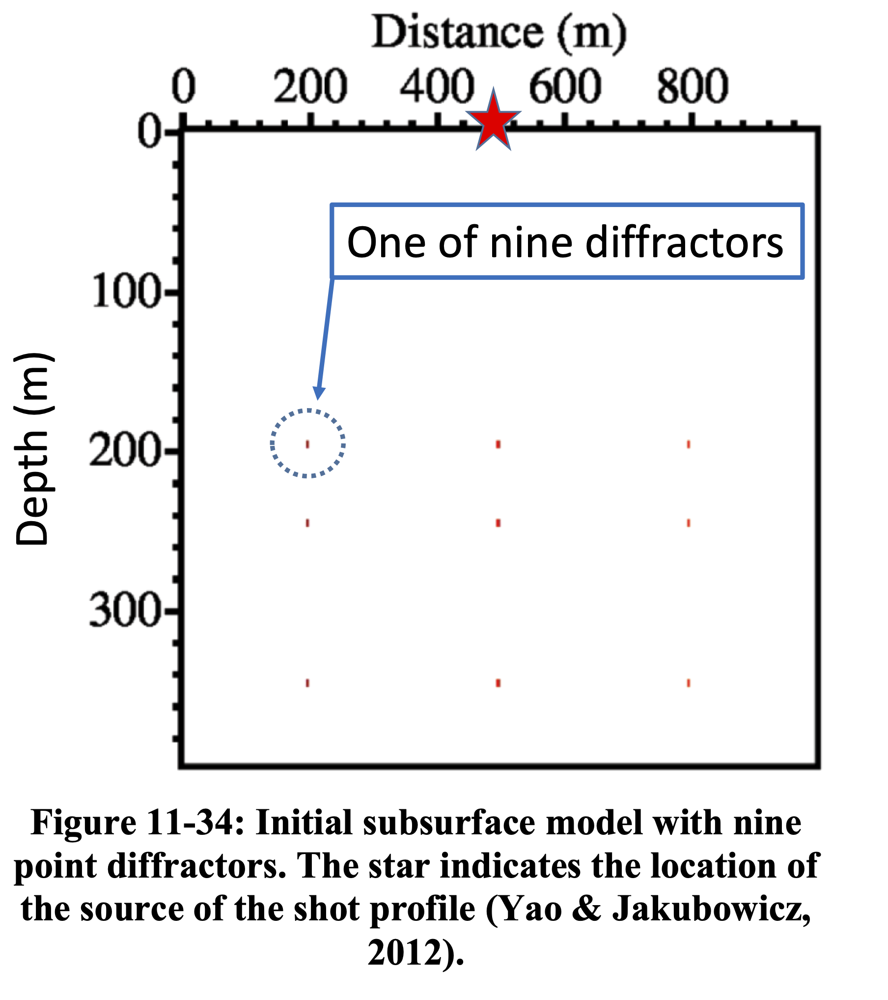
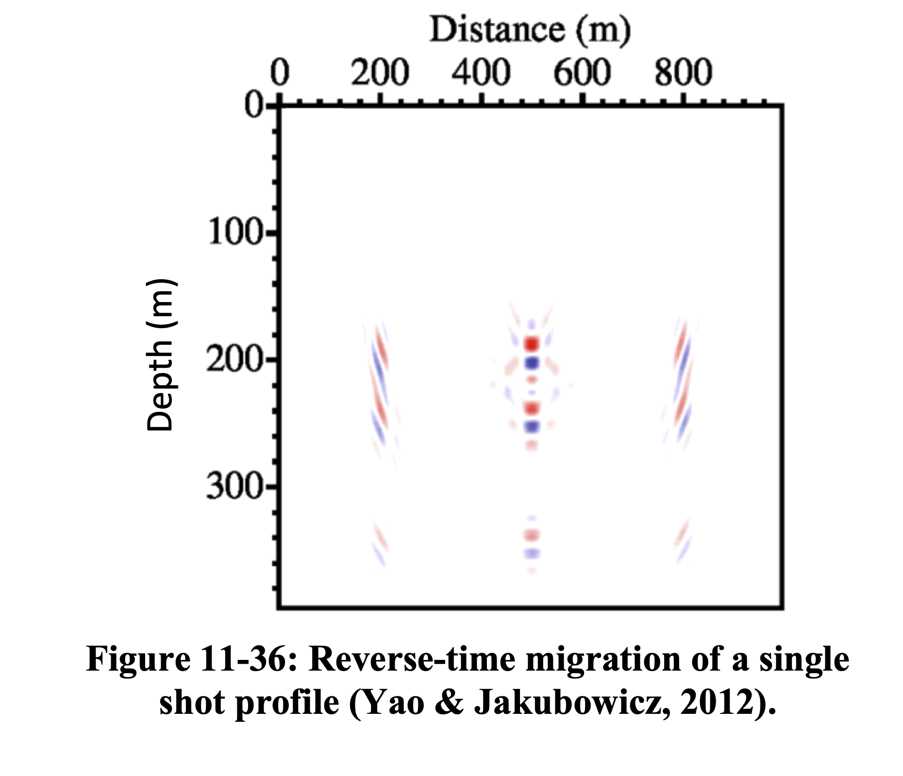
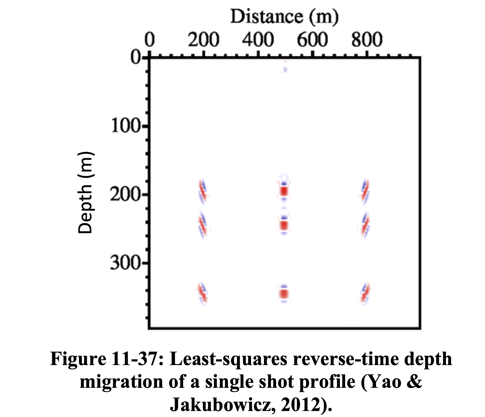
RTM applies the adjoint \(\mathbf{F}^{\top}\) producing a blurred image. LS-RTM inverts \(\mathbf{H}\) to recover the true reflectivity with correct amplitudes and resolution (Yao and Jakubowicz 2012).
Hessian Blurring — Data Domain
Figures adapted from Hill and Rüger (2020).
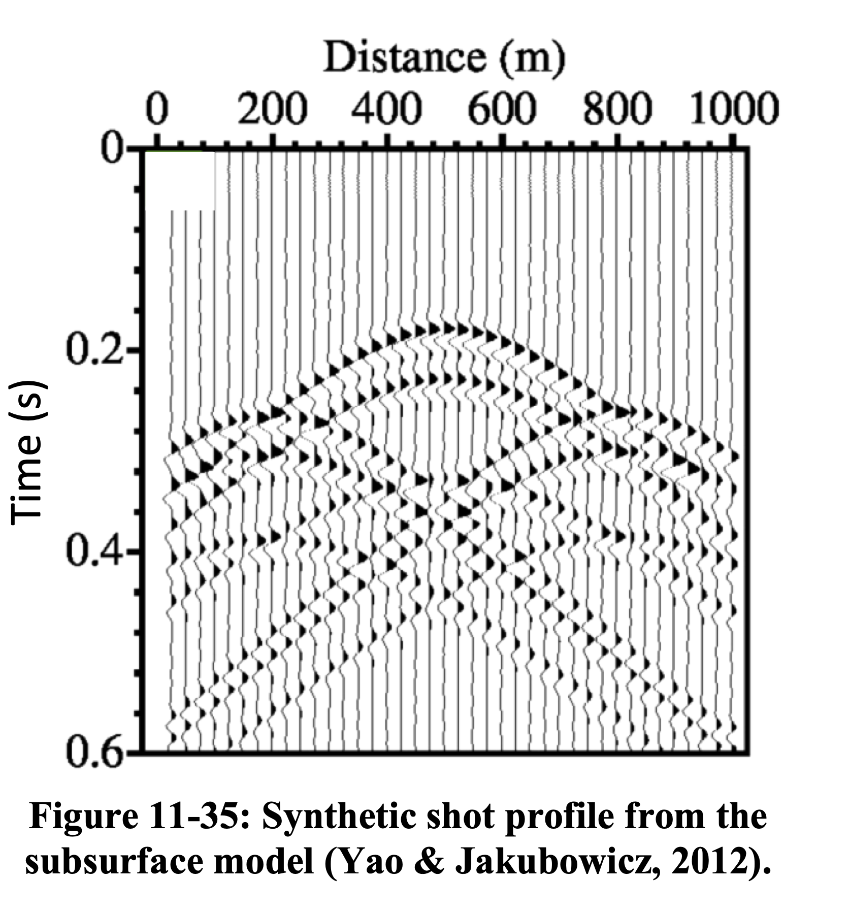
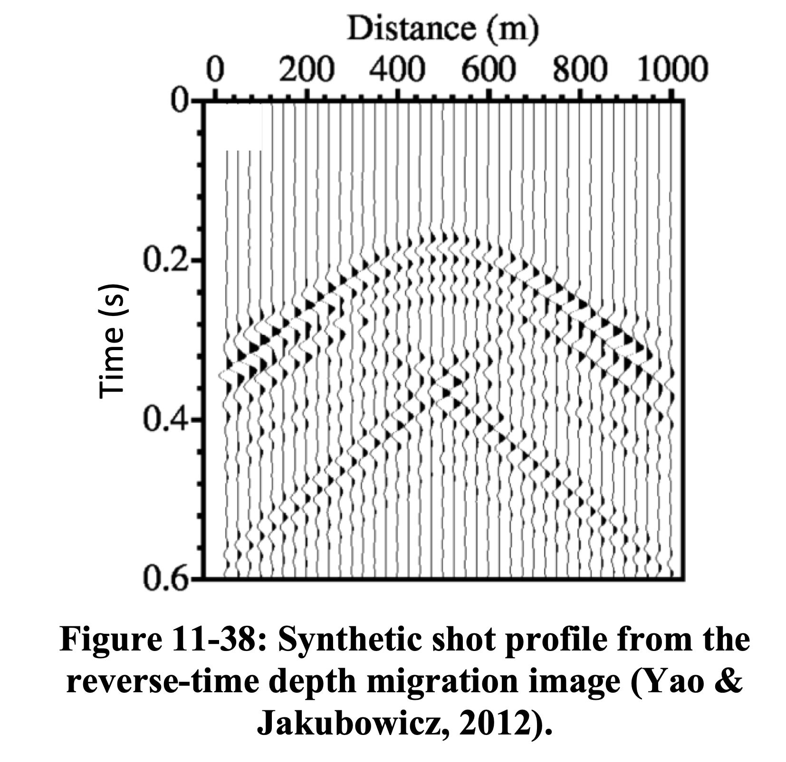
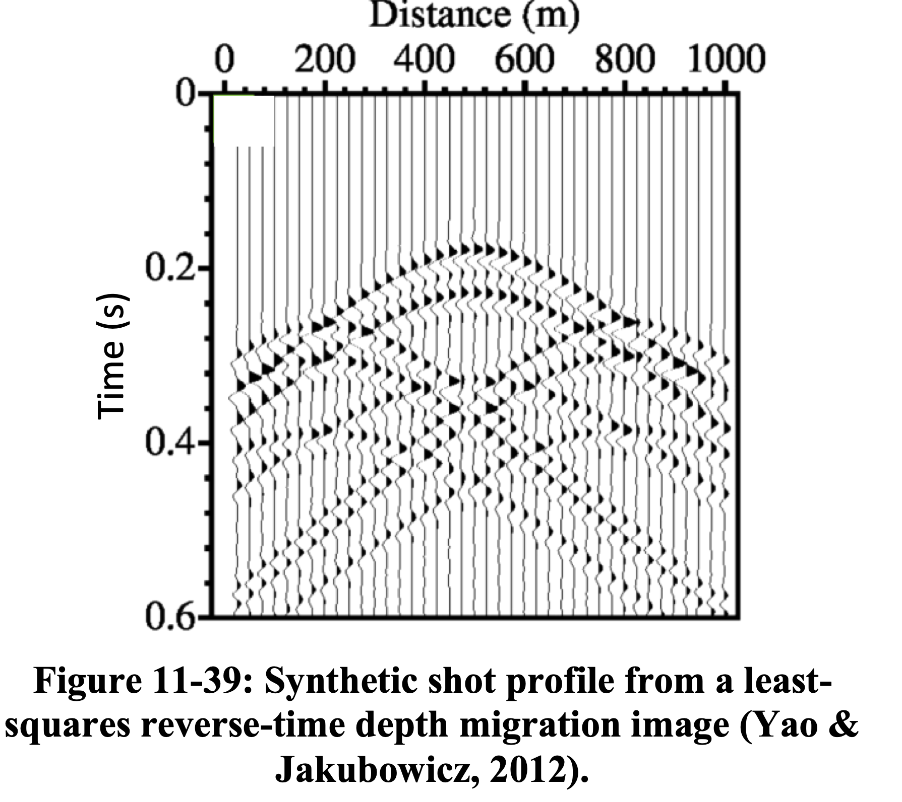
LS-RTM produces an image whose predicted data \(\mathbf{F}\mathbf{m}\) closely matches the observed data \(\mathbf{d}\), confirming that the Hessian has been effectively inverted (Yao and Jakubowicz 2012).
RTM vs. LS-RTM — Salt Model
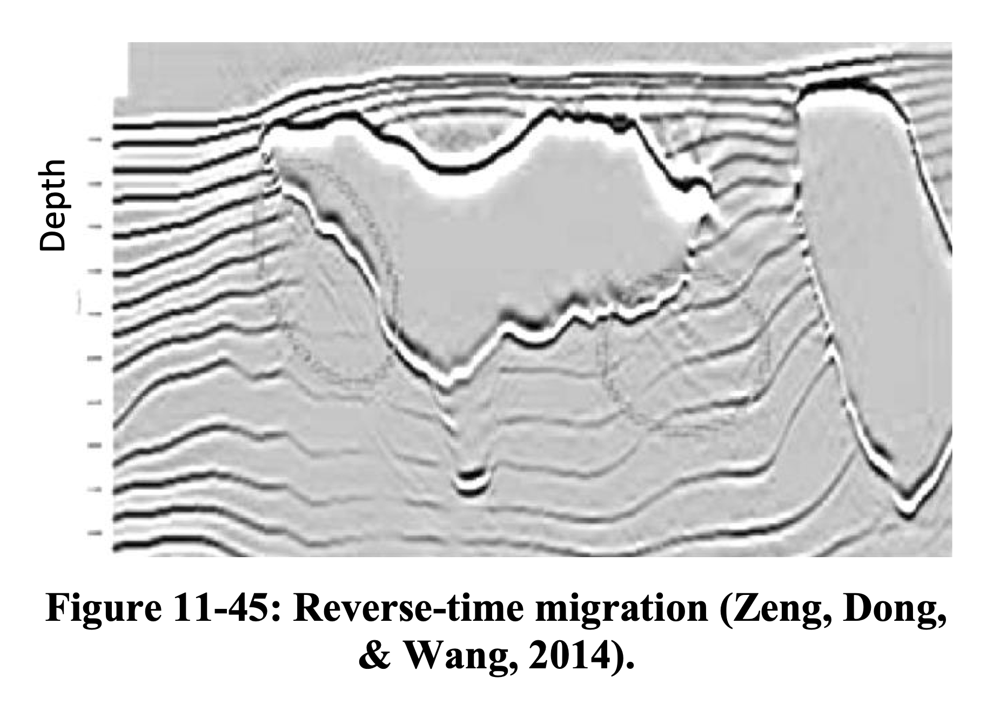
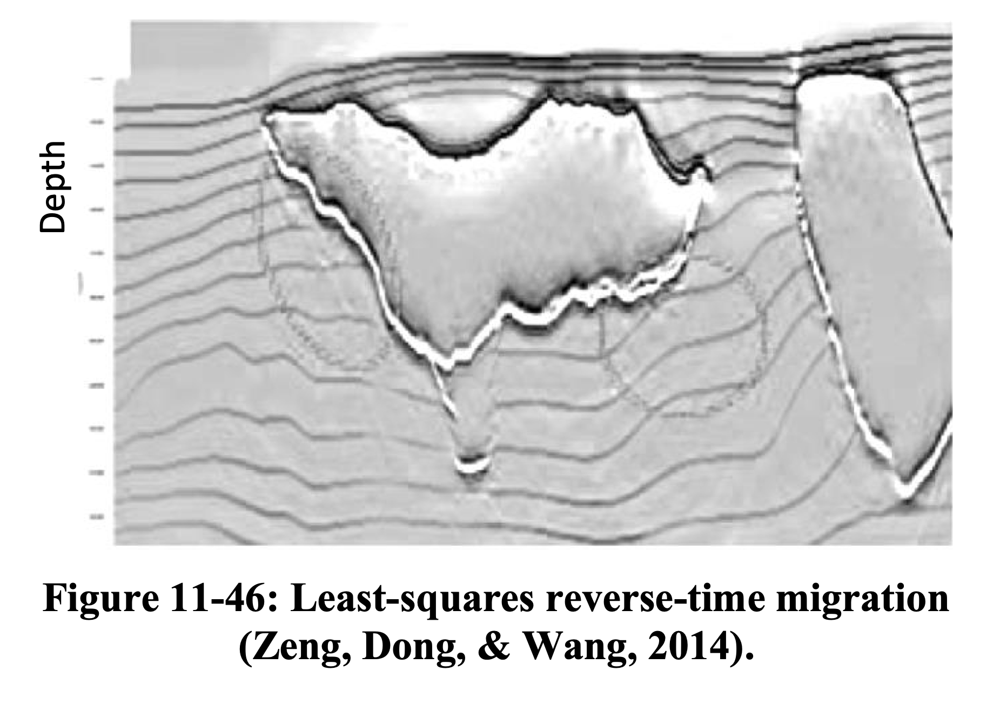
LS-RTM recovers reflector amplitudes beneath the salt body and suppresses migration artifacts (see also Hill and Rüger 2020, Ch. 11).
RTM vs. LS-RTM — Field Data
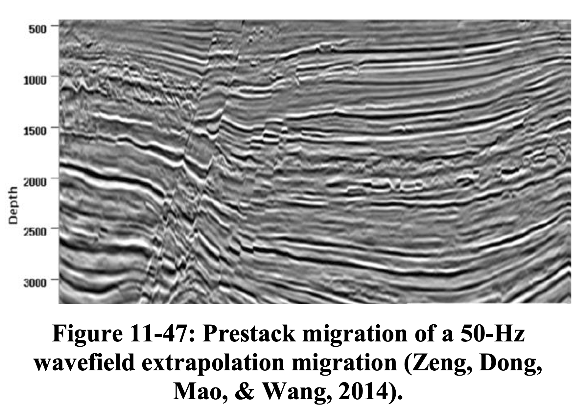
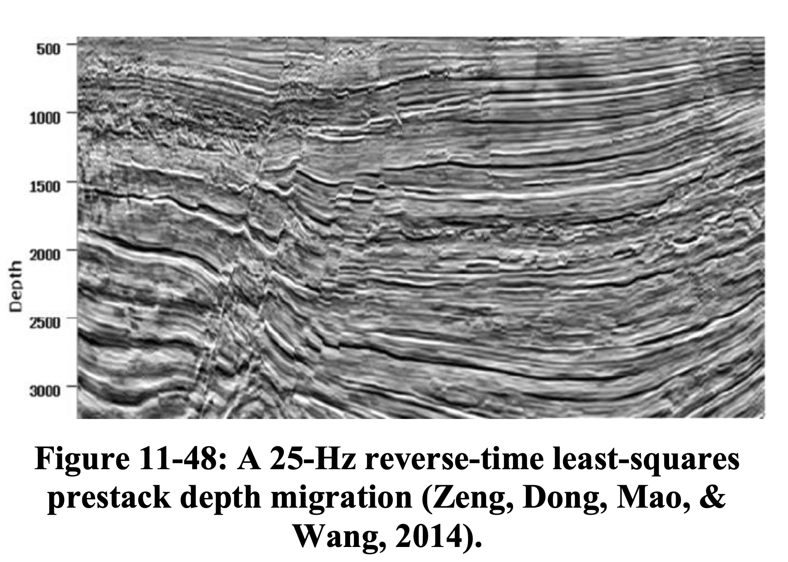
On field data, LS-RTM produces a higher-resolution image with more balanced amplitudes and reduced acquisition footprint (see also Hill and Rüger 2020).
The Normal Equations
Setting \(\nabla_{\mathbf{m}} \|\mathbf{d} - \mathbf{F}\mathbf{m}\|_2^2 = 0\) yields the normal equations:
\[ \mathbf{H}\,\mathbf{m} = \mathbf{F}^{\top}\mathbf{F}\,\mathbf{m} = \mathbf{F}^{\top}\,\mathbf{d} \]
Two strategies to solve this:
Data-domain LSM (DDLSM): iteratively minimize \(\|\mathbf{d} - \mathbf{F}\mathbf{m}\|_2^2\) — never form \(\mathbf{H}\) explicitly
Image-domain LSM (IDLSM): approximate \(\mathbf{H}\) (or \(\mathbf{H}^{-1}\)) and solve in the image domain
Part I: Data-Space Least-Squares Migration
DDLSM — The Optimization Problem
\[ \min_{\mathbf{m}} \;\frac{1}{2}\|\mathbf{F}\,\mathbf{m} - \mathbf{d}\|_2^2 \]
Solved iteratively via LSQR (Paige and Saunders 1982) — a Krylov method based on Golub–Kahan bidiagonalization:
Each iteration requires:
- One demigration \(\mathbf{F}\,\mathbf{v}^{(k)}\)
- One migration \(\mathbf{F}^{\top}\,\mathbf{u}^{(k)}\)
Benefits:
- Amplitude recovery
- Artifact suppression
- Handles incomplete data
- Improved resolution
The Bottleneck
Each LSQR iteration costs application of Jacobian and Jacobian adjoint. Convergence without preconditioning is typically slow ($$20–50+ iterations).
LSQR Algorithm for LSM
Algorithm: LSQR (Paige and Saunders 1982)
Input: Born operator \(\mathbf{F}\), data \(\mathbf{d}\), max iterations \(K\), tolerance \(\tau\)
- Initialize: \(\beta_1\,\mathbf{u}_1 = \mathbf{d}\), \(\;\alpha_1\,\mathbf{v}_1 = \mathbf{F}^{\top}\mathbf{u}_1\), \(\;\mathbf{m}_0 = \mathbf{0}\)
- for \(k = 1, 2, \ldots, K\):
- Bidiagonalization:
- \(\beta_{k+1}\,\mathbf{u}_{k+1} = \mathbf{F}\,\mathbf{v}_k - \alpha_k\,\mathbf{u}_k\) \(\quad\) (one demigration)
- \(\alpha_{k+1}\,\mathbf{v}_{k+1} = \mathbf{F}^{\top}\,\mathbf{u}_{k+1} - \beta_{k+1}\,\mathbf{v}_k\) \(\quad\) (one migration)
- QR update: apply Givens rotation to the bidiagonal system
- Solution update: \(\mathbf{m}_k = \mathbf{m}_{k-1} + \phi_k\,\mathbf{w}_k\)
- Convergence check: stop if \(\|\mathbf{F}\mathbf{m}_k - \mathbf{d}\|_2/\|\mathbf{d}\|_2 < \tau\)
- Bidiagonalization:
Key Property
LSQR minimizes \(\|\mathbf{d} - \mathbf{F}\mathbf{m}\|_2\) monotonically over the Krylov subspace \(\mathcal{K}_k(\mathbf{H}, \mathbf{F}^{\top}\mathbf{d})\). Early termination acts as implicit regularization (Vogel 2002).
Why Is Convergence Slow?
The convergence rate of LSQR depends on the singular-value distribution of \(\mathbf{F}\), or equivalently the eigenvalue distribution of \(\mathbf{H}\):
\[ \|\mathbf{m}^{(k)} - \mathbf{m}^{*}\|_{\mathbf{H}} \;\leq\; 2\left(\frac{\sqrt{\kappa}-1}{\sqrt{\kappa}+1}\right)^k \|\mathbf{m}^{(0)} - \mathbf{m}^{*}\|_{\mathbf{H}} \]
The Hessian has enormous dynamic range because of:
- Geometric spreading (\(\sim z^2\) amplitude decay in 2D)
- Dip-dependent illumination gaps
- Acquisition footprint irregularities
\(\Rightarrow\) \(\kappa(\mathbf{H})\) is large \(\Rightarrow\) LSQR converges slowly.
Preconditioning — The Preconditioned System
Following Herrmann et al. (2009), we reformulate the system using left and right preconditioners.
Right preconditioning with \(\mathbf{M}_R \approx \mathbf{H}^{1/2}\):
\[ \mathbf{F}\,\mathbf{M}_R^{-1}\,\mathbf{u} \approx \mathbf{d}, \qquad \mathbf{m} := \mathbf{M}_R^{-1}\,\mathbf{u} \]
Combined left + right preconditioning:
\[ \underbrace{\mathbf{M}_L^{-1}\,\mathbf{F}\,\mathbf{M}_R^{-1}}_{\widehat{\mathbf{F}}}\;\mathbf{u} \approx \underbrace{\mathbf{M}_L^{-1}\,\mathbf{d}}_{\widehat{\mathbf{d}}} \]
The migrated and least-squares migrated images are then given by:
\[ \widetilde{\mathbf{m}} = \mathbf{M}_R^{-1}\,\widetilde{\mathbf{u}}, \quad \widetilde{\mathbf{u}} = \widehat{\mathbf{F}}^{\top}\,\widehat{\mathbf{d}} \]
\[ \widetilde{\mathbf{m}}_{LS} = \mathbf{M}_R^{-1}\,\widetilde{\mathbf{u}}_{LS}, \quad \widetilde{\mathbf{u}}_{LS} = \arg\min_{\mathbf{u}} \|\widehat{\mathbf{d}} - \widehat{\mathbf{F}}\,\mathbf{u}\|_2 \]
Our preconditioners are derived from three observations (Herrmann et al. 2009):
- Under certain conditions (high-frequency limit, smooth background velocity, no turning waves), the normal operator \(\mathbf{H}\) is a \((d-1)\)-order pseudodifferential operator (\(\Psi\)DO)
- Migration amplitudes decay with depth due to spherical spreading of seismic body waves
- Zero-order \(\Psi\)DOs can be approximated by a diagonal scaling in the curvelet domain
These observations define a series of increasingly accurate approximations to \(\mathbf{H}^{1/2}\), yielding better preconditioners.
Illumination-Based Preconditioning
The simplest diagonal approximation uses illumination maps.
Under high-frequency asymptotics and infinite-aperture assumptions, the Hessian is approximately diagonal:
\[ \mathbf{H} \approx \operatorname{diag}(\mathbf{h}), \quad h(\mathbf{x}) = \sum_s \int |\hat{G}_s(\mathbf{x}, \omega)|^2\, d\omega \]
The preconditioner is then the reciprocal illumination:
\[ P_{\text{illum}}(\mathbf{x}) = \frac{1}{h(\mathbf{x}) + \epsilon} \]
- Cheap to compute (byproduct of migration)
- Corrects gross amplitude imbalances (e.g., depth decay)
- Does not account for dip-dependent or off-diagonal effects
Limitations of Diagonal Preconditioning
What it fixes:
- Depth-dependent amplitude
- Gross illumination holes
- Source-receiver footprint (partially)
What remains:
- Dip-dependent blurring
- Position- and angle-dependent resolution
- Off-diagonal Hessian structure
\(\Rightarrow\) Need phase-space corrections that account for both position and dip/angle simultaneously.
Curvelet-Based Preconditioning
Following Herrmann et al. (2009), the key insight is that the Hessian is nearly diagonal in the curvelet domain.
A pseudodifferential operator (\(\Psi\)DO) has the general form:
\[ (\Psi f)(x) \simeq \int e^{j\xi \cdot x}\, a(x, \xi)\, \hat{f}(\xi)\, d\xi \]
where \(a(x, \xi)\) is the symbol — a space- and spatial-frequency-dependent filter. This is simply a non-stationary convolution: the kernel varies with position.
Curvelets are localized in both space and dip (angle) — they live in phase space and are the natural domain to capture the anisotropic blurring of the Hessian.
Theorem (Candès and Demanet 2005): Under the action of the normal operator \(\mathbf{H}\), curvelets remain approximately invariant — they are only rescaled, with corrections that decay at finer scales.
Why Curvelets? — Frequency Tiling and Spatial Atoms
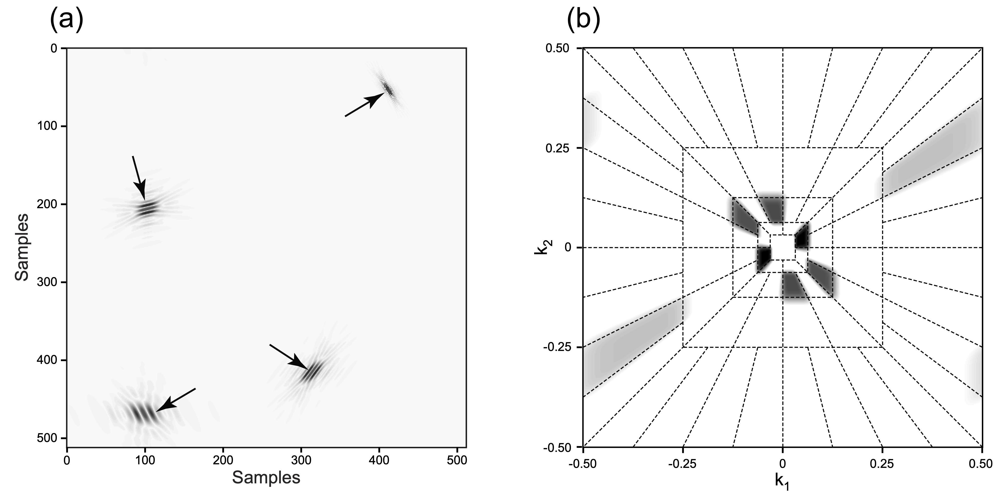
(a) Curvelet atoms in the physical domain at various scales, positions, and orientations. (b) Curvelet tiling of the 2D frequency plane showing dyadic scales with angular wedges obeying parabolic scaling (Herrmann, Moghaddam, and Stolk 2008).
Three Levels of Preconditioning
Herrmann et al. (2009) propose a cascade of three corrections:
| Level | Correction | Domain |
|---|---|---|
| I | Order of migration operator (\(|\omega|\) scaling) | Fourier domain |
| II | Geometric spreading (depth correction) | Physical domain |
| III | Position- and dip-dependent amplitude | Curvelet domain |
\[ \widehat{\mathbf{F}} = \mathbf{M}_L^{-1}\;\mathbf{F}\;\mathbf{M}_R^{-1} \]
Each level addresses a different source of ill-conditioning.
Level I — Left Preconditioning by Fractional Differentiation
The normal operator \(\mathbf{H}\) is a \((d-1)\)-order pseudodifferential operator (\(\Psi\)DO). In 2D image space, its leading-order behavior corresponds to the Laplacian \((-\Delta)\), or \(|\xi|^2\) in the Fourier domain.
Left preconditioner (Herrmann et al. 2009, Eq. 6):
\[ \mathbf{M}_L^{-1} := \partial_{|t|}^{-1/2} \;=\; \mathcal{F}^{*}\,|\omega|^{-1/2}\,\mathcal{F} \]
This half-order fractional time integration compensates for the order of the migration operator, whitening the wavenumber spectrum (cf. Claerbout and Nichols 1994; Symes 2008).
Level II — Depth Correction
Correct for geometric spreading — reflected waves experience amplitude decay proportional to \(\sqrt{z}\) (in 2D) from source down to reflector and back.
Right preconditioner (Herrmann et al. 2009, Eq. 7):
\[ \mathbf{M}_R^{-1} = \mathbf{D}_z := \operatorname{diag}(\mathbf{z})^{1/2} \]
where \(z_i = i\,\Delta z\), with \(\Delta z\) the depth sample interval.
Combined with Level I, this accounts for the smooth, position-dependent amplitude variations, but still treats all dips equally at each location.
Level III — Curvelet-Domain Scaling
After left preconditioning, the Hessian becomes a zero-order \(\Psi\)DO — a non-stationary dip filter with smooth symbol \(a(x, \xi)\).
Key approximation (Herrmann, Moghaddam, and Stolk 2008; Herrmann et al. 2009, Eq. 9):
\[ \Psi\,\mathbf{r} \approx \mathbf{C}^{\top}\,\mathbf{D}_\Psi^2\,\mathbf{C}\,\mathbf{r}, \qquad \mathbf{D}_\Psi^2 := \operatorname{diag}(\mathbf{d}^2) \]
where \(\mathbf{C}\) is the curvelet transform and \(\mathbf{d}\) are estimated from a remigrated-image matched-filtering procedure.
The full right preconditioner (Eq. 10):
\[ \mathbf{M}_R^{-1} = \mathbf{D}_z\;\mathbf{C}^{\top}\;\mathbf{D}_\Psi^{-1} \]
The weights \(d_{j,l,k}\) (scale \(j\), angle \(l\), position \(k\)) capture the position- and dip-dependent illumination deficiencies. Cost: approximately one modeling + one migration.
Why Curvelets?
Phase-space localization:
- Scale (frequency band)
- Orientation (reflector dip)
- Position (spatial location)
Curvelets obey parabolic scaling: width \(\sim\) length\(^{1/2}\)
Key properties for imaging:
- Sparsify seismic images
- Near-diagonalize the Hessian
- Approximation error decreases at finer scales
- Anisotropic — match wavefront geometry
\(\Rightarrow\) Curvelet-domain diagonal scaling is a far better approximation of \(\mathbf{H}^{-1}\) than any isotropic (e.g., Fourier or spatial) diagonal scaling.
Industry Adoption
The curvelet-domain preconditioning idea was later adopted by industry. Wang, Huang, and Wang (2018) proposed “curvelet-domain Hessian filters” (CHF) for preconditioned iterative LSRTM — essentially the same approach as Herrmann et al. (2009) — demonstrating faster convergence and fewer artifacts on both SEAM I synthetic and Gulf of Mexico field data.
Note
The CGG paper does not cite the original curvelet-based preconditioning work by Herrmann et al. (2009), despite using the same curvelet-domain diagonal approximation of the Hessian.
CHF-Preconditioned LSRTM — SEAM I Synthetic

SEAM I synthetic study: (a) true reflectivity; (b) raw RTM; (c) conventional LSRTM (iteration 1); (d) CHF-preconditioned LSRTM (iteration 1); (e) conventional LSRTM (iteration 10); (f) CHF-preconditioned LSRTM (iteration 3) (Wang, Huang, and Wang 2018).
CHF-Preconditioned LSRTM — GOM Field Data

GOM field data: (a) raw RTM; (b) regular LSRTM (iteration 6); (c) CHF-preconditioned LSRTM (iteration 1, equivalent to single-iteration CHF); (d) CHF-preconditioned LSRTM (iteration 2) (Wang, Huang, and Wang 2018).
Effect on Convergence
On the SEG/EAGE AA’ salt model (Herrmann et al. 2009):
| Preconditioning level | Iterations to converge |
|---|---|
| None | \(\sim\) 50+ |
| Level I (Fourier) | \(\sim\) 30 |
| Level I + II (+ depth) | \(\sim\) 15 |
| Level I + II + III (+ curvelet) | \(\sim\) 5–8 |
Effect on Convergence
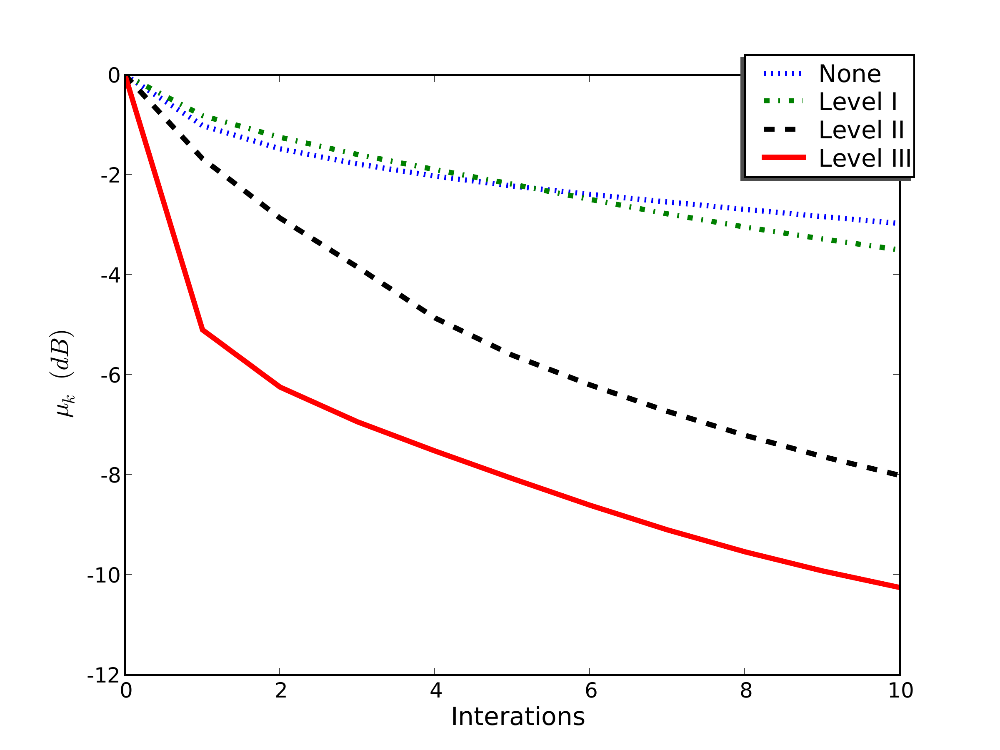
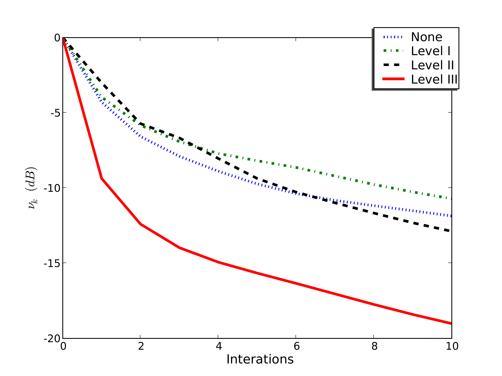
Dotted blue: no preconditioning; dash-dotted green: Level I; dashed black: Level II; solid red: Level III. Level II/III curves are offset by one iteration to account for the preconditioning overhead.
SEG/EAGE AA’ Salt Model
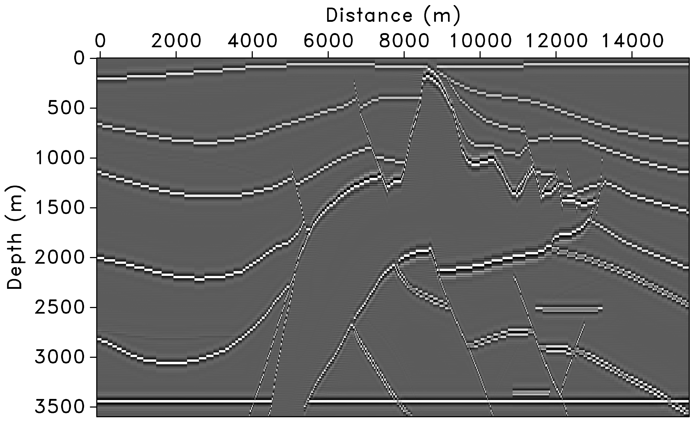
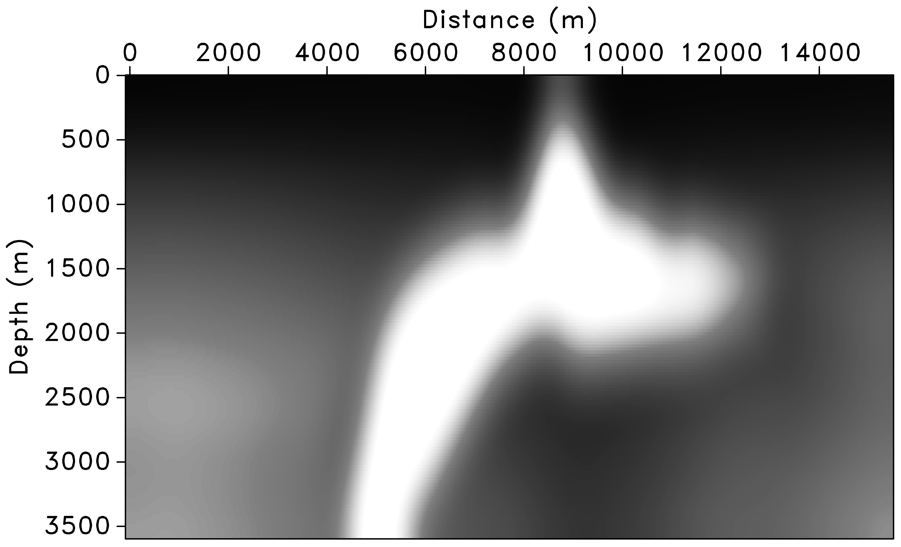
The migrated image suffers from deteriorated amplitudes, especially under the high-velocity salt and for steep reflectors and faults (Herrmann et al. 2009).
Preconditioning Results — Migrated Images
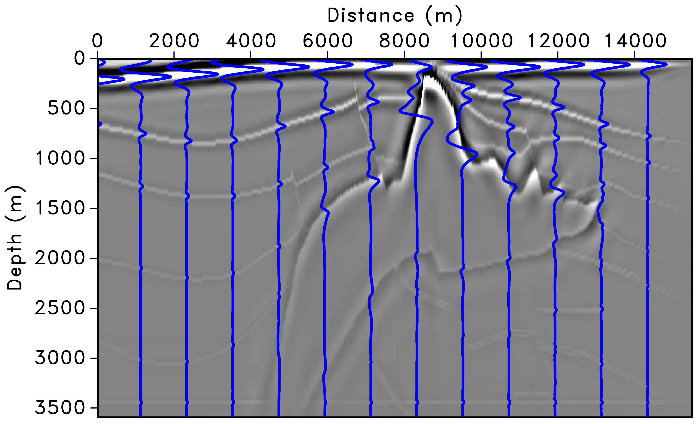
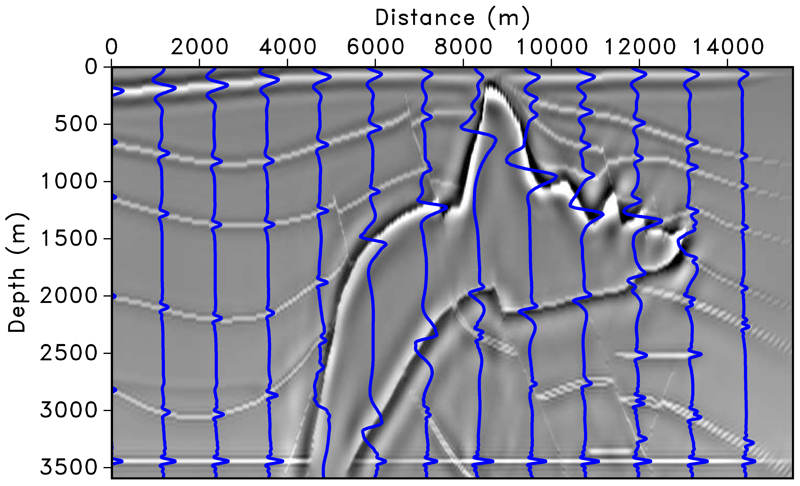
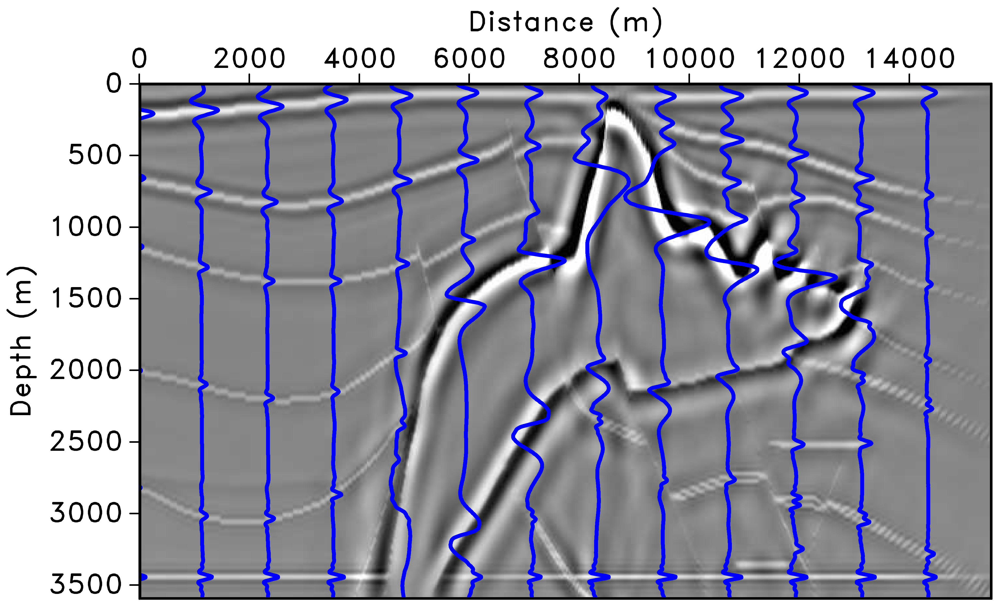
(a) Left preconditioning removes the imprint of the Laplacian, restoring low-frequency content. (b) Adding depth correction further improves amplitudes, but variations remain along the major horizontal reflector above 3500 m. (c) Curvelet-domain scaling provides additional position- and dip-dependent amplitude correction (Herrmann et al. 2009).
Sparsity Promotion as Regularization
Beyond preconditioning, curvelet sparsity can serve as regularization:
\[ \min_{\mathbf{m}}\;\frac{1}{2}\|\mathbf{F}\mathbf{m} - \mathbf{d}\|_2^2 + \lambda\,\|\mathbf{C}\,\mathbf{m}\|_1 \]
The \(\ell_1\) penalty in the curvelet domain:
- Suppresses incoherent migration artifacts
- Handles incomplete/noisy data gracefully
- Natural complement to curvelet preconditioning
See also: Herrmann and Li (2012), Efficient least-squares imaging with sparsity promotion and compressive sensing, Geophys. Prosp.
Part II: Image-Space Least-Squares Migration
IDLSM — Key Idea
Instead of iterating in data space, work directly in the image domain.
Start from the normal equations:
\[ \mathbf{m} = \mathbf{H}^{-1}\,\mathbf{m}_{\text{mig}} \]
If we can approximate \(\mathbf{H}^{-1}\) (or \(\mathbf{H}\)), we solve an image-domain deconvolution problem:
\[ \min_{\mathbf{m}} \;\frac{1}{2}\|\mathbf{H}\,\mathbf{m} - \mathbf{m}_{\text{mig}}\|_2^2 + \mathcal{R}(\mathbf{m}) \]
Advantage: no additional modeling/migration — just matrix–vector products with \(\mathbf{H}\) (or its approximation) in the image domain.
The Challenge
The full Hessian \(\mathbf{H} \in \mathbb{R}^{N \times N}\) where \(N\) = number of image points.
For a typical 3D survey: \(N \sim 10^8\)–\(10^{10}\)
Impractical to Form Explicitly
\(\mathbf{H}\) has \(N^2\) elements — storing it is impossible. We need structured approximations.
Approximation Strategy 1: Diagonal Hessian
The simplest approach — assume \(\mathbf{H}\) is diagonal:
\[ H(\mathbf{x}, \mathbf{x}) \approx \sum_{s,r} A_s(\mathbf{x})\, A_r(\mathbf{x}) \]
where \(A_s, A_r\) are source/receiver amplitude functions.
Pros:
- Very cheap (illumination map)
- Often adequate for amplitude balancing
Cons:
- Ignores off-diagonal terms (spatial blurring)
- Cannot improve resolution
- Fails near complex structures (salt flanks, faults)
Approximation Strategy 2: Point Spread Functions
Each column of \(\mathbf{H}\) is the point spread function (PSF) at that image point:
\[ \text{PSF}(\mathbf{x}, \mathbf{x}') = [\mathbf{F}^{\top}\mathbf{F}](\mathbf{x}, \mathbf{x}') \]
Compute PSFs on a coarse grid and interpolate:
- Place point scatterers at selected locations \(\{\mathbf{x}_i\}\)
- Model + migrate \(\Rightarrow\) local PSFs
- Solve local deconvolution problems
Point Spread Functions — Spatial Variation
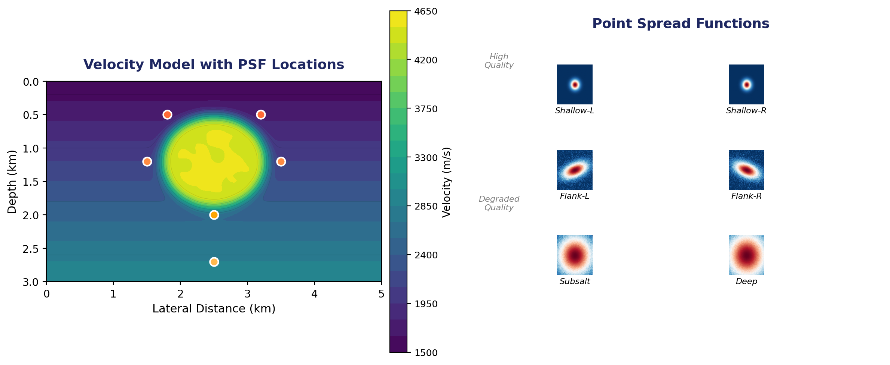
Left: velocity model with a salt body and marked PSF sampling locations. Right: corresponding PSFs showing how resolution degrades near salt flanks and at depth.
Approximation Strategy 3: Non-Stationary Filters
Approximate the Hessian action as space-varying convolution:
\[ [\mathbf{H}\,\mathbf{m}](\mathbf{x}) \approx \int h(\mathbf{x}, \mathbf{x}')\, m(\mathbf{x}')\, d\mathbf{x}' \]
where \(h(\mathbf{x}, \mathbf{x}')\) is localized (banded).
Matching-filter approach (Aoki and Schuster 2009; Guo and Wang 2020):
- Compute \(\mathbf{m}_{\text{mig}}\) and \(\mathbf{H}\mathbf{m}_{\text{mig}} = \mathbf{F}^{\top}\mathbf{F}\mathbf{m}_{\text{mig}}\)
- Estimate non-stationary filters that map \(\mathbf{m}_{\text{mig}} \to \mathbf{F}^{\top}\mathbf{F}\mathbf{m}_{\text{mig}}\)
- Invert these filters \(\Rightarrow\) approximate \(\mathbf{H}^{-1}\)
Cost: one additional demigration/remigration cycle.
Approximation Strategy 4: Kronecker Factorization
Gao, Matharu, and Sacchi (2020) factorize the Hessian as a superposition of Kronecker products:
\[ \mathbf{H} \approx \sum_{i=1}^{r} \mathbf{A}_i \otimes \mathbf{B}_i \]
where \(\mathbf{A}_i, \mathbf{B}_i\) are small matrices.
- Only a small percentage of Hessian elements needed (matrix completion)
- Iterative solution replaces modeling/migration with fast matrix multiplications
- Achieves near-identical results to full DDLSM at 5–15\(\times\) speedup
Approximation Strategy 5: Curvelet-Domain Hessian
Building on the near-diagonality theorem, the Hessian in the curvelet domain can be approximated beyond a simple diagonal.
Diagonal approximation (Herrmann et al. 2009; Sanavi, Moghaddam, and Herrmann 2021):
\[ \mathbf{C}\,\mathbf{H}\,\mathbf{C}^{\top} \approx \operatorname{diag}(\boldsymbol{\sigma}) \]
Weights \(\boldsymbol{\sigma}\) estimated from demigration/remigration of curvelet atoms.
Banded/guided filter extension (Li et al. 2021):
- Estimate a dense curvelet-domain filter (not just diagonal)
- Uses guided-filter methodology for robustness
- Better handles low-wavenumber artifacts
Approximation Strategy 6: Chains of Operators
Approximate \(\mathbf{H}^{-1}\) as a chain of simple operators in complementary domains:
\[ \mathbf{H}^{-1} \approx \mathbf{W}_{\text{space}} \cdot \mathbf{W}_{\text{freq}} \cdot \mathbf{W}_{\text{space}} \]
Greer and Fomel (2018): non-stationary amplitude + frequency matching
- Two operators capture amplitude and frequency variations
- Cost comparable to a single migration
- Handles the principal differences between RTM and LSRTM images
This is conceptually similar to the multi-level preconditioning of Herrmann et al. (2009), but formulated as a post-migration correction.
Comparison of Approaches
| Method | Cost | Resolution gain | Amplitude | Off-diagonal |
|---|---|---|---|---|
| Diagonal (illumination) | Negligible | No | Partial | No |
| PSF-based | Moderate | Yes (local) | Yes | Local |
| Non-stationary filters | 1 extra cycle | Yes | Yes | Banded |
| Kronecker | Sampling \(\mathbf{H}\) | Yes | Yes | Approximate |
| Curvelet diagonal | $$1 extra cycle | Partial | Yes | Phase-space |
| Full DDLSM | \(K\) iterations | Yes | Yes | Exact |
Regularization in IDLSM
The image-domain problem is often ill-posed. Common regularization:
\[ \min_{\mathbf{m}} \;\frac{1}{2}\|\mathbf{H}\,\mathbf{m} - \mathbf{m}_{\text{mig}}\|_2^2 + \lambda_1\|\mathbf{m}\|_1 + \lambda_2 \text{TV}(\mathbf{m}) \]
- \(\ell_1\) (sparsity): promote sparse reflectivity (curvelets, seislets, wavelets)
- Total variation: preserve sharp edges, suppress oscillatory noise
- Combined: high-resolution and geologically plausible images
DDLSM vs. IDLSM — When to Use Which?
Data-Domain (DDLSM)
- Exact Hessian action (implicit)
- Better for severely incomplete data
- Natural for simultaneous sources
- High computational cost
- Benefits greatly from preconditioning (curvelet, illumination)
Image-Domain (IDLSM)
- Requires Hessian approximation
- Very fast once \(\mathbf{H}\) is estimated
- Natural for target-oriented imaging
- Lower computational cost
- Quality depends on approximation accuracy
DDLSM vs. IDLSM — Workflows
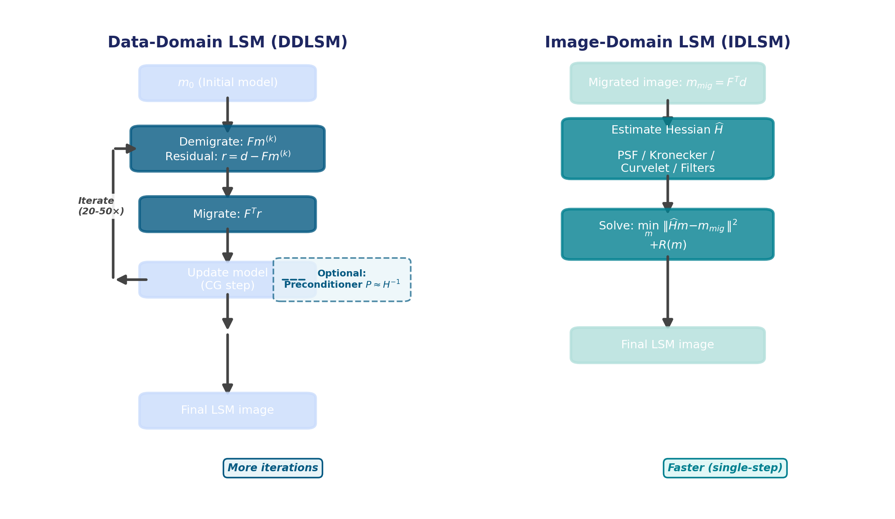
Side-by-side comparison of the DDLSM iterative workflow (left) and the IDLSM direct approach (right).
Connections and Outlook
Unifying View
Both DDLSM and IDLSM solve the same normal equations — they differ in how:
\[ \underbrace{\mathbf{F}^{\top}\mathbf{F}}_{\text{Hessian}}\;\mathbf{m} = \underbrace{\mathbf{F}^{\top}\mathbf{d}}_{\text{migrated image}} \]
| DDLSM | IDLSM | |
|---|---|---|
| Access to \(\mathbf{H}\) | Implicit (via \(\mathbf{F}, \mathbf{F}^{\top}\)) | Explicit approximation |
| Preconditioning | \(\mathbf{M}_L, \mathbf{M}_R\) speed up LSQR | \(\hat{\mathbf{H}}^{-1}\) applied directly |
| Sweet spot | Full survey, complex geology | Target zones, fast turnaround |
The curvelet framework provides a bridge — useful both as a preconditioner in DDLSM and as a Hessian approximation in IDLSM.
Emerging Directions
- Learned Hessian approximations: deep-learning-based inverse Hessian estimation (Kaur, Pham, and Fomel 2020)
- Extended image-domain LSM: subsurface-offset gathers for velocity errors and AVA
- Stochastic/randomized methods: phase-encoded sources to reduce per-iteration cost
- Elastic & viscoacoustic LSM: multi-parameter Hessian challenges
Key References
Summary
- Conventional migration = adjoint, not the inverse \(\Rightarrow\) Hessian blurring
- DDLSM iterates in data space via LSQR — exact but expensive; preconditioning is essential
- Illumination-based preconditioners correct gross amplitude but miss dip-dependent effects
- Curvelet-based preconditioners exploit phase-space near-diagonality of \(\mathbf{H}\) for dramatic convergence acceleration
- IDLSM approximates \(\mathbf{H}\) directly — fast and practical for target-oriented imaging
- Hessian approximations range from diagonal \(\to\) PSF \(\to\) non-stationary filters \(\to\) Kronecker \(\to\) curvelet-domain — each trading cost for accuracy